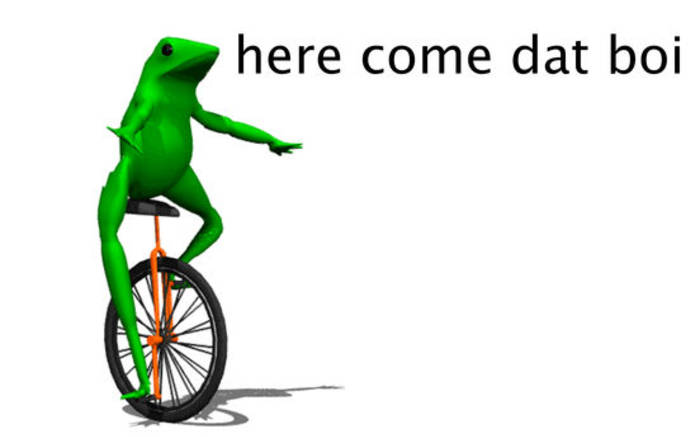

Meme zijn overal, maar, wat was de eerste meme eigenlijk? En wat kwam daarna? Daarom hebben we een Meme timeline gemaakt.
Dancing baby, aka "Baby Cha Cha" was de intro van een Zweedse rock band in 1968, maar het filmpje van het dansende baby werd populair via email. Veel mensen zeggen dat dit de "Eerste meme ooit" is.

Deze is makkelijk om uit te leggen, Charlie had zijn broers vinger gebeten, en iemand heeft zijn reactie op Youtube gezet, en toen werd het een meme.
No explaination needed.
Keyboard cat is een kat die heette Fatso, die in 1984 op een keyboard speelde met een blauw t-shirt. Het werd geupload in 2007 maar werd populair in 2009.
Just, deal with it.
In April 2011 was er een gif gemaakt van een Pop Tart kat die door de ruimte vloog. Het duurde maar 3 dagen voordat er Youtube filmpje werd geupload van Nyan Cat met het liedje "Nyanyanyanya". Het werd mega populair.

Ja, nog een kat. Maar deze is Grumpy, en daarom wordt hij "Grumpy Cat" genoemd.
Ainsley Harriott werd een meme op 29 juni 2012.
Dat Boi werd een meme in juli 2014.
Deze meme is gebabaseerd op hoe de linker haai danst, tijdens de Super bowl in 2015.
Hij werd tot dood verklaard in 2017

Deze meme is gebaseerd op een spel, the floor is __, de meest populair daarvan is The Floor is Lava.
Kijk het fimpje, geen uitleg nodig